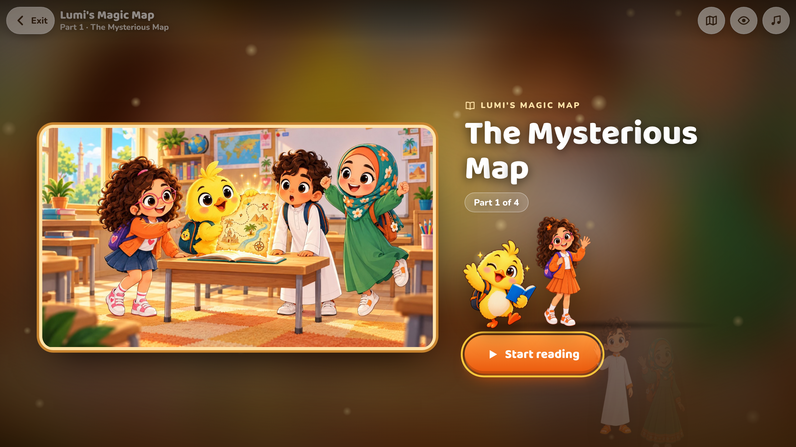

تعرّفوا على لومي
لومي هو الرفيق الصغير الذي سيقابله طفلكم في كل درس — كتكوت فضولي ومرح يحب القراءة والمغامرة. مع لومي، يرافق طفلكم أصدقاؤه عمر وسارة ونور في المستويات الأولى، ثم ينضم زياد وحمد ليكتمل "الفريق" الذي يمضي معه من أول كلمة حتى المستوى السادس.
رحلة مبنية على القصة والمعنى، لا على الحفظ
بدلًا من حفظ قوائم كلمات منفصلة، يتعلّم طفلكم الكلمات داخل حوارات ومواقف وقصص لها شخصيات وأحداث. هكذا تصبح اللغة ذات معنى، لا مجرد كلمات تُحفظ ثم تُنسى.
من المستوى التمهيدي حتى المستوى الثالث، لكل مستوى قصة مصوّرة من أربعة أجزاء — مثل "خريطة لومي السحرية" — تُفتح أجزاؤها بعد الدروس ٥ و١٠ و١٥ و٢٠. تُقرأ القصة بصوت مسجّل وتضيء كل كلمة أثناء قراءتها، ويستطيع الطفل إخفاء النص ليقرأ بنفسه. ومن المستوى الثاني حتى السادس، يقرأ طفلكم نصوص "مختبر القراءة" في الحصة نفسها (الفصل ٣).

صفحة حقيقية من "خريطة لومي السحرية" — القصة التفاعلية الأولى التي يفتحها طفلكم